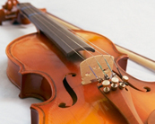

Witamy serdeczie na naszej stronie!
Poniżej znajdą Państwo wszystkie informacje odnośnie Letnich Warsztatów Dzieci Suzuki w Lutomiersku (sierpień)
Instrumenty
- Skrzypce 
- Wiolonczela
- Flet
-
Fortepian

- Organy
- Folk & Blues